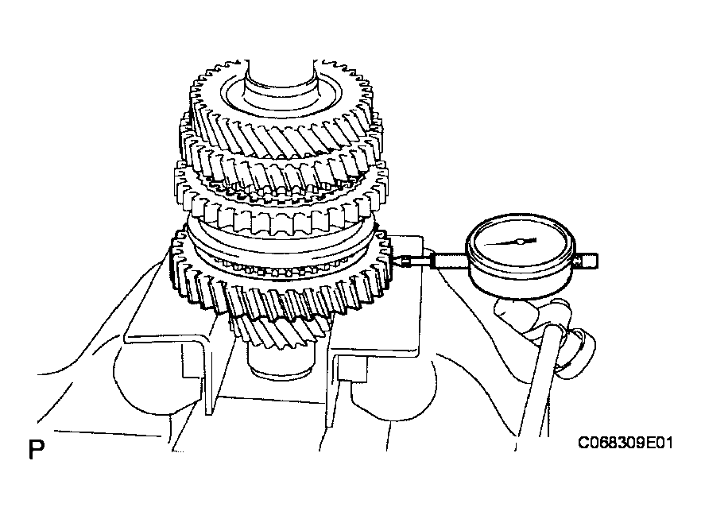
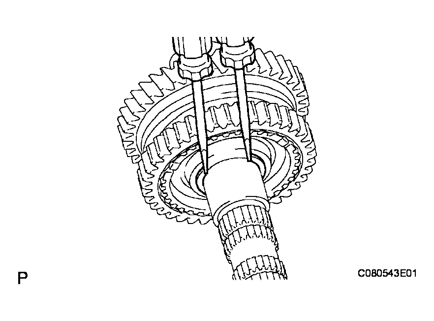
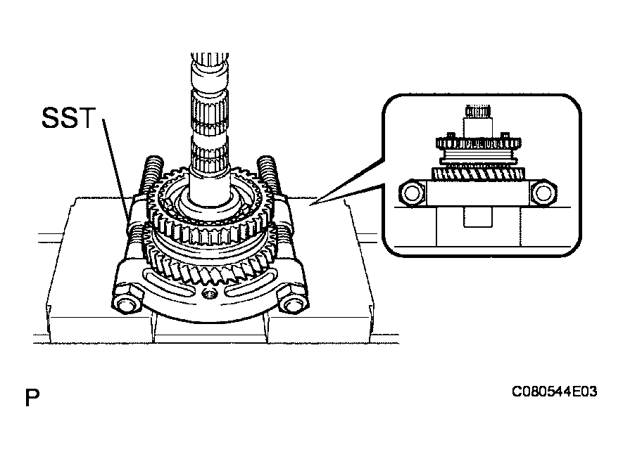

Output Shaft: Disassembly
- INSPECT 1ST GEAR THRUST CLEARANCE
- Using a feeler gauge, measure the thrust clearance.
Standard clearance: 0.10 to 0.40 mm (0.0039 to 0.0157 in.)
Maximum clearance: 0.40 mm (0.0157 in.)
If the clearance is greater than the maximum, replace the 1st gear or No. 1 transmission clutch hub.
- Using a feeler gauge, measure the thrust clearance.
- INSPECT 2ND GEAR THRUST CLEARANCE
- Using a dial indicator, measure the thrust clearance.
Standard clearance: 0.10 to 0.45 mm (0.0039 to 0.0177 in.)
Maximum clearance: 0.45 mm (0.0177 in.)
If the clearance is greater than the maximum, replace the No. 1 transmission clutch hub, 2nd gear or 3rd driven gear.
- Using a dial indicator, measure the thrust clearance.
- INSPECT 1ST GEAR RADIAL CLEARANCE
- Using a dial indicator, measure the radial clearance between the gear and shaft.

Courtesy of © TOYOTA, LICENSE AGREEMENT TMS1002Standard clearance
GEAR RADIAL CLEARANCE REFERENCEItem Specified Condition KOYO made 0.015 to 0.058 mm (0.0006 to 0.0023 in.) NSK made 0.015 to 0.056 mm (0.0006 to 0.0022 in.) Maximum clearance
GEAR RADIAL CLEARANCE REFERENCEItem Specified Condition KOYO made 0.058 mm (0.0023 in.) NSK made 0.056 mm (0.0022 in.) If the clearance is greater than the maximum, replace the gear, needle roller bearing or shaft.
- Using a dial indicator, measure the radial clearance between the gear and shaft.
- INSPECT 2ND GEAR RADIAL CLEARANCE
- Using a dial indicator, measure the radial clearance.
Standard clearance
GEAR RADIAL CLEARANCE REFERENCEItem Specified Condition KOYO made 0.015 to 0.058 mm (0.0006 to 0.0023 in.) NSK made 0.015 to 0.056 mm (0.0006 to 0.0022 in.) Maximum clearance
GEAR RADIAL CLEARANCE REFERENCEItem Specified Condition KOYO made 0.058 mm (0.0023 in.) NSK made 0.056 mm (0.0022 in.) If the clearance is greater than the maximum, replace the 2nd gear needle roller bearing.
- Using a dial indicator, measure the radial clearance.
- REMOVE 4TH DRIVEN GEAR
- Using SST and a press, press out the output shaft rear bearing and 4th driven gear from the output shaft.
SST 09950-00020
- Using SST and a press, press out the output shaft rear bearing and 4th driven gear from the output shaft.
- REMOVE OUTPUT GEAR SPACER
- Remove the output gear spacer from the output shaft.
- REMOVE 2ND GEAR
- Using SST and a press, press out the 3rd driven gear with 2nd gear from the output shaft.
SST 09950-00020
- Using SST and a press, press out the 3rd driven gear with 2nd gear from the output shaft.
- REMOVE 2ND GEAR NEEDLE ROLLER BEARING
- Remove the 2nd gear needle roller bearing and 2nd gear bearing spacer from the output shaft.
- REMOVE NO. 1 SYNCHRONIZER RING (for 2nd Gear)
- Remove the No. 1 synchronizer ring from the output shaft.
- REMOVE 1ST GEAR
- Using 2 screwdrivers and a hammer, remove the snap ring from the output shaft.

Courtesy of © TOYOTA, LICENSE AGREEMENT TMS1002NOTE: Use a cloth to keep the snap ring from springing away. - Using SST and a press, press out the No. 1 clutch hub and 1st gear from the output shaft.

Courtesy of © TOYOTA, LICENSE AGREEMENT TMS1002SST 09950-00020
NOTE:- Do not tighten SST excessively.
- Support the input shaft by hand so that it will not drop.
- Using 2 screwdrivers and a hammer, remove the snap ring from the output shaft.
- REMOVE NO. 1 SYNCHRONIZER RING (for 1st Gear)
- Remove the No. 1 synchronizer ring from the 1st gear.
- REMOVE 1ST GEAR NEEDLE ROLLER BEARING
- Remove the 1st gear needle roller bearing from the output shaft.
- REMOVE 1ST GEAR THRUST WASHER
- Remove the 1st gear thrust washer from the output shaft.
- REMOVE 1ST GEAR THRUST WASHER BALL
- Remove the 1st gear thrust washer ball from the output shaft.
- REMOVE REVERSE GEAR
- Remove the reverse gear, 3 No. 1 synchromesh shifting keys and 2 No. 1 synchromesh shifting key springs from the No. 1 transmission clutch hub.
NOTE: Use a cloth to keep the shifting key and shifting key spring from springing away.
- Remove the reverse gear, 3 No. 1 synchromesh shifting keys and 2 No. 1 synchromesh shifting key springs from the No. 1 transmission clutch hub.